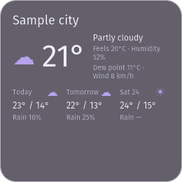
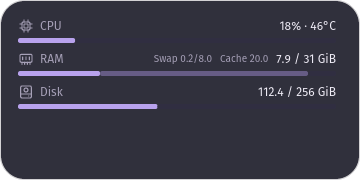
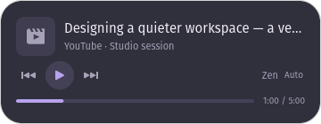
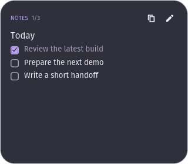

<!doctype html><html lang="en"><meta charset="utf-8"><style>*{box-sizing:border-box}html,body{margin:0;color:#f0eefb;font-family:Arial,sans-serif}body{background:#111320}h1{margin:0;font-size:40px;font-weight:500;letter-spacing:-1px}p{font-size:20px;color:#bcb8d0;margin:12px 0 0}.label{font-size:18px;color:#d7d2e7;margin:12px 0 0}.hint{color:#aba7c0;font-size:14px}</style><style>main{padding:42px}section{display:flex;align-items:flex-start;gap:24px;margin:34px 0 26px}img{display:block;max-width:100%;height:auto}.weather{width:260px;flex-shrink:0}.stack{width:360px;flex-shrink:0;display:grid;gap:24px}.notes{width:320px;flex-shrink:0}footer{font-size:14px;color:#aba7c0}</style><main><h1>The useful things, within reach.</h1><p>Pick your widgets. Give each one its place.</p><section><div class="stack"></div></section><footer>Native widget renders with sample data · Clock, calendar, projects and focus timer also available</footer></main></html>
